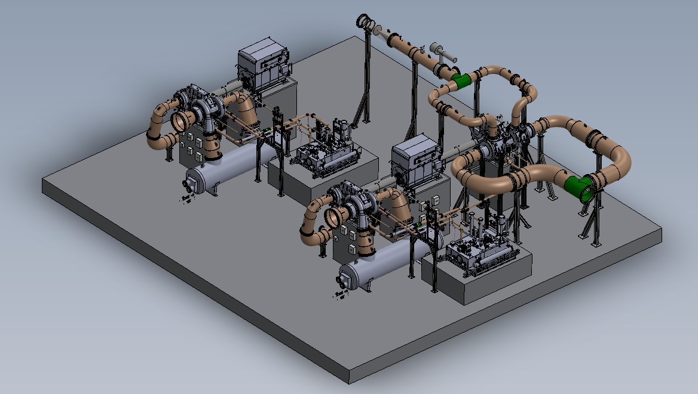
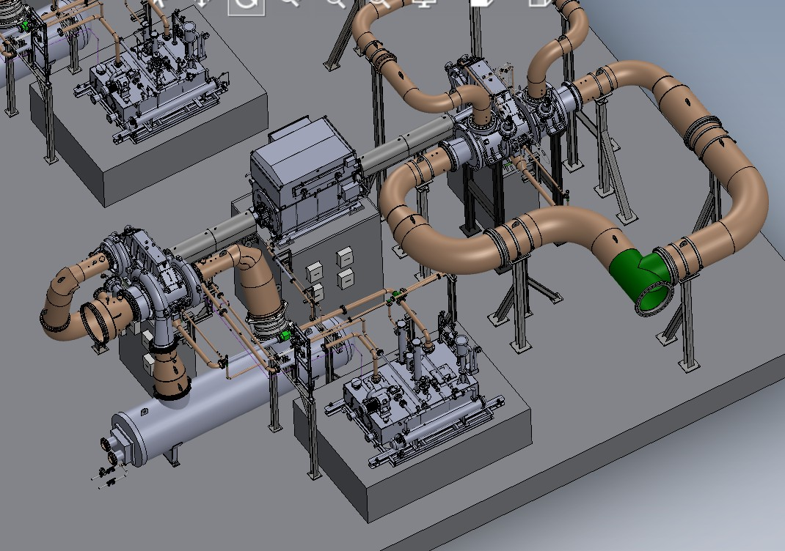
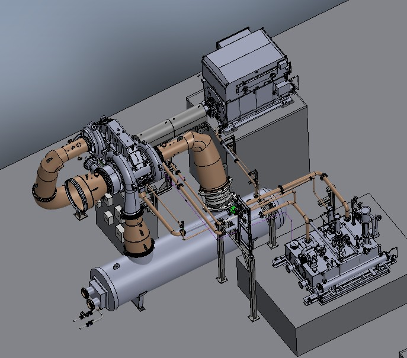
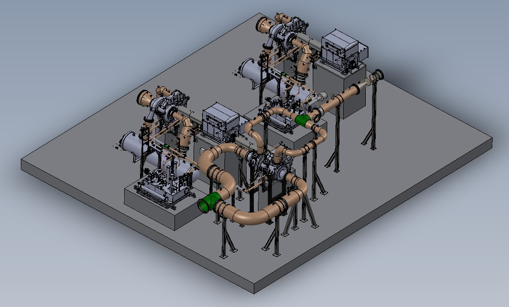
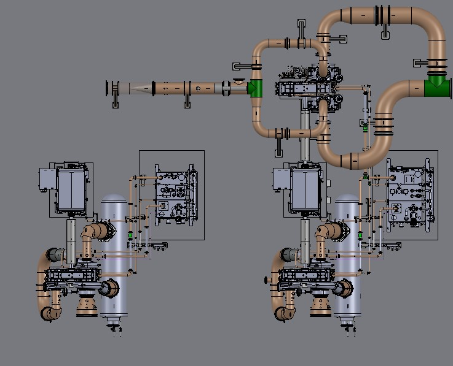

Two 3-stage air compressors
Two separate trains with identical duty, each with its own discharge.
Compressor and expander package engineering for Sichuan Zhongfu Taihua New Material Technology Co., Ltd., Sichuan, China.

Two separate trains with identical duty, each with its own discharge.
Energy recovery from process off-gas on the BAC motor shaft.
MAC, BAC and ETB on one platform; the BAC and ETB share a common motor.




Two separate three-stage air compressor trains (MAC and BAC), each with its own water-cooled gas cooler and discharge line at 5.35 bar(a); the two-stage expander (ETB) recovers energy from process off-gas on the BAC common motor. Water injection is in the customer scope.
One system serves the BAC and the ETB on the common motor: oil tank with two heaters and demister, gear-driven main and motor-driven auxiliary pumps, twin water-cooled oil coolers and twin filters. The MAC has an identical stand-alone system.
Two separate three-stage air trains, MAC and BAC, each with its own gas cooler and discharge line to the H₂O₂ process. The BAC shares a double-ended motor with a two-stage expander that recovers energy from process off-gas.
Expander temperatures are shown in kelvin, as in the process data: off-gas enters at 372.15 K and leaves at 283.5 K. Water injection between stages is in the customer scope.
Original illustrative animation based on my typical P&ID for this package · generic tags · stage-to-pinion arrangement shown for illustration. Use the step buttons to walk through it.
DESIGNED: Complete 3D package arrangement for all three machines in SolidWorks, with AutoCAD 2D drawings. Scope covered process piping, gas coolers, lubrication systems/equipment, supports, ETB piping, coupling guard/couplings and package interfaces.
PERFORMED: Stress calculations for the separately mounted lubrication skid and equipment/load calculations used for civil concrete-foundation design.
REVIEWED: Team manufacturing drawings and detailed design work. Participated in customer design reviews, query resolution, revisions and as-built documentation.
COORDINATED: Instrumentation selection/interfaces, customer requirements, China manufacturing support and FAT activities.
Designed process piping, gas cooler integration, lubrication piping and equipment including cooler, heater, auxiliary pumps, oil demisters and filters, plus package supports.
Designed and integrated the BAC arrangement and associated piping/equipment. The BAC shares a common motor arrangement with the ETB expander.
Designed process piping and supports and integrated the coupling/guard arrangement with the common motor interface.
Integrated shared lubrication piping and tank for the expander and BAC. The lubrication skid included coolers, heaters, demisters and filters.
Performed lubrication-skid stress calculations and prepared equipment/load information for civil concrete foundation design. The machines themselves were treated as free-standing equipment.
Coordinated instrumentation selection, customer tie-in points, overall plant/package layout, customer reviews and manufacturing interfaces.
Routing the large-diameter compressor and expander piping between three machines on one platform while keeping nozzle loads on the machines within limits and leaving access around each unit.
Splitting the large-bore spools so they could be fabricated, handled, fitted and installed in manufacturing, with field joints and support points planned for fit-up and alignment.
Arranging one lube-oil system and one motor to serve both the BAC and the expander, with oil supply and drain lines to two gearboxes and the common motor.
Providing equipment and load data for the civil foundations of three free-standing machines, and coordinating plinth positions with the piping and lube-oil skid layout.
Other equipment and components to the applicable universal standards. Inter-stage water injection was in the customer's scope.
FAT and SAT photographs are not published: mobile phones are not permitted on the factory floor under Atlas Copco policy, except on approved visits.
This package required integration of three machines, shared auxiliary systems and multiple engineering interfaces on a common platform: two separate air compressor trains and an expander that shares its motor with the BAC. My contribution combined hands-on 3D package design with lubrication-skid stress calculations, foundation-load engineering, multidisciplinary coordination, drawing review and manufacturing/FAT support.
Portfolio note: proprietary customer drawings and confidential OEM documents are intentionally not reproduced here.
← Back to projects